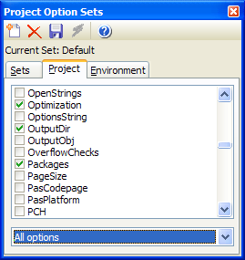

Project Option Sets |
|
With this expert, you can save off sets of project options and recall them at a later time. Along with the project options, a few environment options can be saved as well. This expert supports IDE docking.
To save a given set of project options, you should first execute the Project Option Sets expert and click Add to name the new set (such as "Debug" or "Release"). Next, open the IDE's Project Options dialog and verify that the settings you wish to save are set correctly. Note that you can open the Project Options dialog from the right-click menu of settings listbox. Let the IDE store those settings by confirming the Project Options dialog. Next, check the settings on the Project Settings or Environment Settings tabs that you want to be saved. Settings you don't check here are not affected when you load the stored settings later. Finally, use the Save button to save the settings. Your saved option sets are stored in an XML file called ProjectOptionSets-*.xml. The storage location of this file is defined in the GExperts Configuration dialog. To load a previously saved set of options, select the set name in the list and use the Apply button.
Note: The option name lists match those used internally by the IDE, so it may take some searching to determine which option name matches a given setting in the project options dialog. The listbox provides some popup hints to help you, and you can use the combobox below the list to filter the available options based on certain categories. 
|